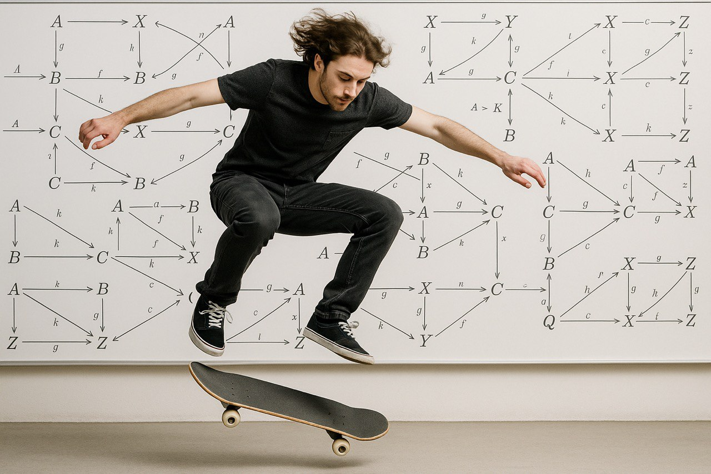

About
Since Spring 2026 I am a PhD student at University of Ottawa working under the supervision of Martina Rovelli . From Fall 2024 to Winter 2025 I worked as a Graduate Teaching Assistant at University of Massachusetts Amherst , working under Martina Rovelli. My main focus is on Higher Category Theory, in particular in the last period I work with higher Morita category using the model of n-complicial set.
I obtained both my Bachelor and Master in Mathemathics at University of Bologna, I wrote my master thesis under the supervision of Giovanni Mongardi and Sofia Tirabassi.
In 2023, under the mentorship of Fosco Loregian, I took part in the Itaca Folk Ensemble project. Our aim was to use the language of category theory to approach automata theory, proving new results through these categorical lenses and revisiting existing ones (such as René Guitart’s work) from a more abstract and structural perspective. This led to three papers and initiated a line of research that is now being carried forward by the principal investigator.
